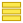
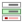
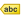
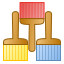

Vlastnosti vrstvy¶
Atributová tabulka¶
Vektorová data se skládájí ze dvou základních složek – geometrie (body, linie, polygony) a informací o jednotlivých prvcích tzv. atributů.
Atributovou tabulku otevřeme pomocí ikony Otevřít atributovou tabulku (klávesová zkratka F6), nebo pravým kliknutím vyvoláme kontextové menu a zvolíme Otevřít atributovou tabulku. Tabulka slouží k prohlížení a editaci atributové složky dat. V názvu okna je vypsaný název vrstvy, celkový počet prvků (Features total), počet odfiltrovaných prvků (filtered) a počet prvků ve výběru (selected).
{kind=link}
Obr. 56 Atributová tabulka vrstvy.¶
Okno atributové tabulky lze otevírat ve dvou režimech, a to buď v samostatném okně, nebo jako panel. Přepínat tyto režimy lze v liště atributové tabulky pomocí funkce|mDockify|:sup:Atributová tabulka jako panel. Výchozí chování lze nastavit v hlavním nastavení QGISu ( záložka Zdroje dat).
V okně atributové tabulky můžeme zobrazit jak atributovou tabulku (výchozí), tak i formulář atributů. Tato zobrazení se přepínají pomocí tlačítek v pravém dolním rohu: Přepnout na zobrazení tabulky a Přepnout na zobrazení formuláře.
{kind=link}
{kind=link}
Základní funkce atributové tabulky
kliknutím na název pole, lze hodnoty seřadit.
kliknutím na číslo řádku můžeme označit jednotlivé prvky do výběru
pomocí tlačítka Přesunout výběr nahoru lze zobrazit vybrané prvky na prvním místě tabulky, což nám vybraná data zpřehlední.
lze použít funkce výběru, které jsou dostupné i v hlavním okně:
 Vybrat prvky pomocí vzorce
Vybrat prvky pomocí vzorce Vybrat prvky pomocí vzorce
 Zrušit výběr ve všech vrstvách
Zrušit výběr ve všech vrstvách Posunout mapu na výběr
Posunout mapu na výběr Přiblížit na výběr
Přiblížit na výběr
tlačítko Vybrat/filtrovat prvky pomocí formuláře (Ctrl+F) umožňuje vytvářet výběr nebo fltrovat prvky za pomocí formuláře (viz Vybrat prvky podle hodnoty ). Pro návrat do atributové tabulky stiskněte tlačítko Přepnout na zobrazení tabulky.
pomocí tlačítka Uspořádat sloupce tabulky lze měnit pořadí sloupců, nebo jednotlivé sloupce skrýt.
{kind=link}
{kind=link}
{kind=link}
{kind=link}
{kind=link}
Obr. 57 Možnost uspořádání sloupců.¶
Tip
Pomocí nabídky v levém dolním rohu lze zvolit filtr zobrazených prvků. Ve výchozím nastavení filtr zobrazuje všechny prvky ve vrstvě, tedy hodnota: Zobrazit všechny prvky
Pomocí funkce  Pravidla podmíněného formátování lze pole v atributové tabulce stylizovat na podle námi definovaných pravidel
{kind=link}
Vlastnosti¶
Vlastnosti vyvoláme dvojklikem na vrstvu nebo pravým tlačítkem myši kontextové menu a zvolíme Vlastnosti.
Informace¶
Jako první vidíme ve vlastnostech vrstvy záložku informace. Zde najdeme základní popis zdrojových dat - cesta k souboru, kódování, souřadnicový systém, ale i počet prvků a seznam atributů
Obr. 58 Informace vektorové vrstvy.¶
Zdroj¶
Zde nalezneme základní nastavení ke zdroji vrstvy - název vrstvy, kódování textu, souřadnicový systém (SRS) a nastavení filtru.
Obr. 59 Zdroj vektorové vrstvy.¶
Styl¶
Symbologie¶
{kind=link}
Pomocí rolovací nabídky  vybereme typ symbologie:
vybereme typ symbologie:
Jednoduchý symbol - zde máme na výběr z uložených symbolů. V levém sloupci máme zobrazený typ symbolu a jeho jednotlivé části. Při kliknutí na konkrétní složku symbolu můžeme měnit její vlastnosti (barvy, typ výplně, šířka ohraničení atd.).
{kind=link}
Obr. 60 Jednoduchá symbologie. V levé části vlastnosti označené složky symbolu.¶
Tip
Pomocí tlačítek můžeme další složky symbolu přidávat
 , odebírat
, odebírat  , zamykat nebo
měnit jejich pořadí , . Tímto způsobem
si můžeme vytvořit vlastní symbologii.
, zamykat nebo
měnit jejich pořadí , . Tímto způsobem
si můžeme vytvořit vlastní symbologii.
{kind=link}
{kind=link}
{kind=link}
Kategorizovaný - vhodný pro kategoriální proměnné
sloupec - pro výběr atributu
barevný rozsah - výběr barev
pro vytvoření kategorii kliknout na klasifikovat
{kind=link}
Obr. 61 Kategorizovaná symbologie.¶
{kind=link}
Obr. 62 Odstupňovaná symbologie.¶
 Popisky¶
{kind=link}
Kromě rozlišení prvků pomocí symbologie lze také přidat k jednotlivým prvkům popisek na základě jednoho z atributů.
Obr. 63 Vlastnosti popisků vrstvy.¶
Na této záložce je nejdříve nutné vybrat z rolovací nabídky
položku Single labels. Tím se nám otevřou
možnosti stylizace popisků, kde můžeme nastavit formát textu, obalovou zónu
kolem textu, pozadí, stínování, možnosti umístění a vykreslování. Nejdříve je
ale nutné nastavit zdroj popisku. Pomocí rolovací nabídky Popisky z
vybreme zdrojový atribut popisku.
Obr. 64 Příklad popisků s použitím obalové zóny textu.¶
Poznámka pro pokročilé
Jako zdroj popisků lze použít i vzorec, a to buď
přímým vepsáním do nabídky, nebo vytvořením vzorce pomocí kalkulátoru
 .
.
Panel stylování¶
Pro pohodlnější práci se stylováním, slouží panel stylování Stylování vrstvy, který lze aktivovat pravým kliknutím na prázdné místo v hlavním panelu a výběrem z nabídky nebo mocí klávesové zkratky F7. Výhodou panelu stylování je, že lze rychle, bez znovuotevírání okna, přepínat mezi vrstvyami,veškeré provedené změny v symbologii se vykreslí ihned, a také je zde možnost kroku zpět na předchozí symbologii, nebo přímo procházení historie všech změn.
Obr. 65 Panel stylování¶
Práce se styly¶
Více stylů u vrstvy¶
V rámci projektu lze vytvořit různé „verze“ nastylování u konkrétní vrstvy. Takto přednastavený styl můžeme potom podle potřeby měnit. Tato funkce může být užitečná např. při vytváření mapových výstupů jednoho zdroje dat s různou symbologií. Styly lze ovládat (přídání, smazání, přejmenování, zvolení, export) pomocí tlačítka ve spodní části okna vlastností, nebo z kontextového menu vrstvy (pravý klik na vrstvu v panelu vrstev), zde je přepínání jednotlivých stylů rychlejší. V panelu stylování se styly ovládají v samostatné záložce Správce stylů.
{kind=link}

Obr. 66 Výběr stylu pomocí kontextového menu z panelu vrstev¶
Obr. 67 Výběr stylu pomocí kontextového menu z panelu vrstev¶
Uložení a načtení nastavení vrstvy pomocí souboru¶
Celé nastavení (styl, formuláře, atd.) vrstvy lze také uložit do samostatného souboru (*.qml, *.sld), což můžeme využít pro sdílení mezi kolegy, nebo pro pozdější použití nastavení vrstvy v jiném projektu.
Možnost uložení a načtení najdeme v okně Vlastnoti vrstvy kliknutím na tlačítko Styl. První dvě možnosti v nabídce umožní Načíst styl… a Uložit styl….
Obr. 68 Možnosti práce se styly¶
U QML souboru můžeme zvolit (stejně jako při kopírování stylů), které součásti nastavení se budou ukládat popř. načítat.
Obr. 69 Načítání nastavení vrstvy ze souboru¶